Ajourné Interval Palette · M05 information-first remediation
Cards, one-page sheet and Plogger chart
Compact cards carry identity stripe, exact pair, mini keyboard and three legible Plogger marks.
13 compact cards
Card gallery
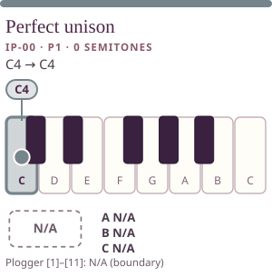
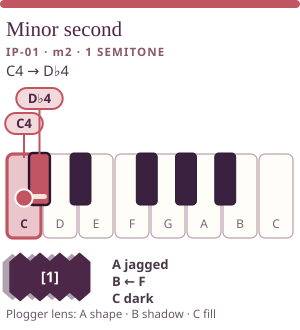
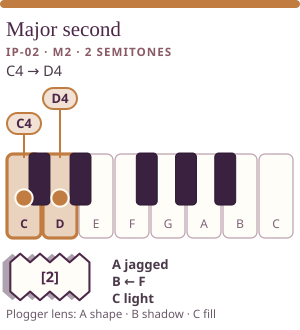
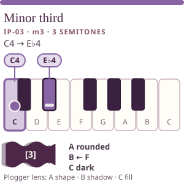
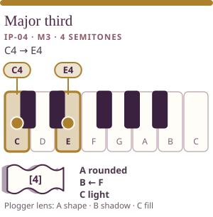
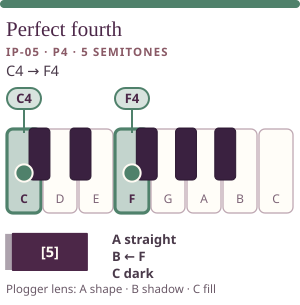
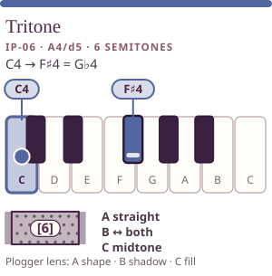
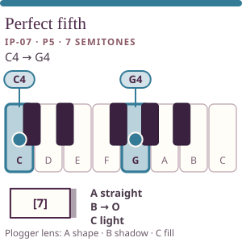
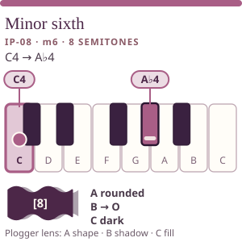
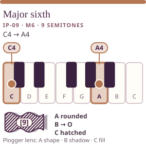
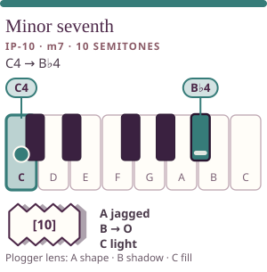
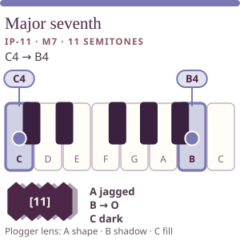
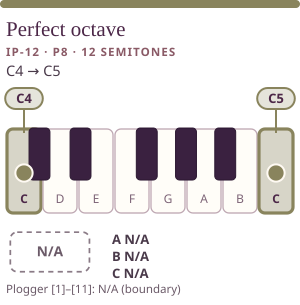
IPF-onepage
One-page sheet (print-ready)
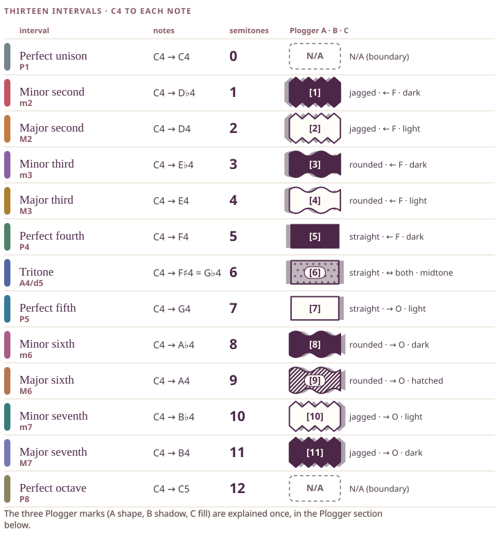
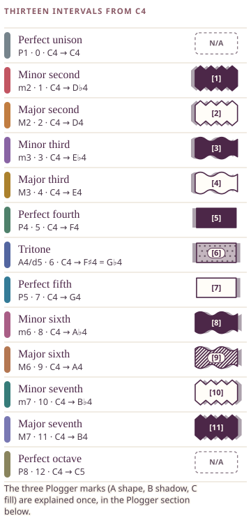
IPF-plogger-chart
All eleven historic glyphs, with N/A boundaries
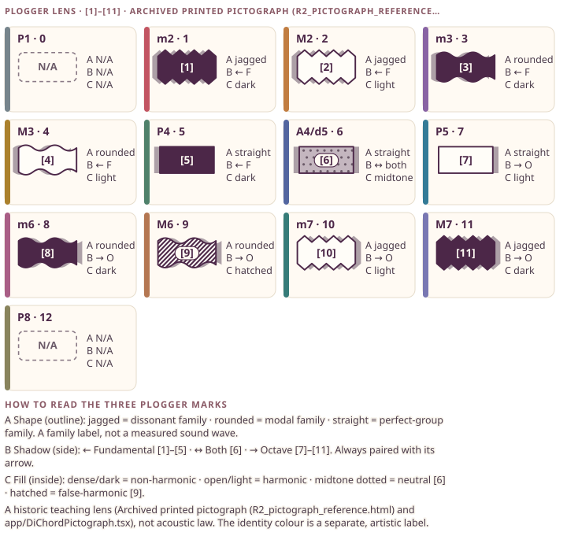
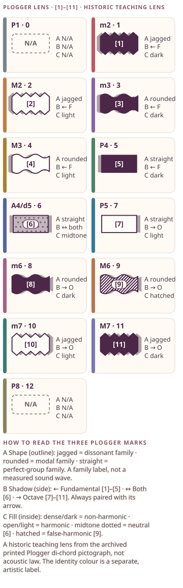